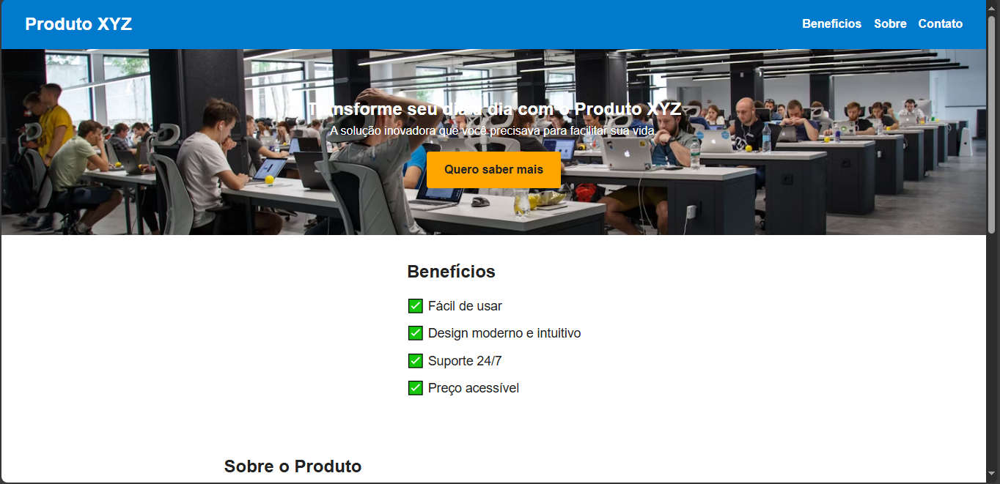

Sobre mim
Sou estudante do 3º ano do Ensino Médio e formado no curso técnico de Desenvolvimento de Sistemas pela ETEC. Estou em busca da minha primeira oportunidade profissional na área de programação.
Tenho conhecimentos em HTML, CSS, JavaScript, Git e GitHub, e venho praticando com projetos reais, como esta calculadora e páginas responsivas. Busco sempre aprender mais e evoluir como desenvolvedor web.
Projetos
Calculadora Web

Projeto simples com HTML, CSS e JavaScript que realiza operações básicas de calculadora.
🚀 Ver projeto 🔗 Código no GitHubLanding Page Responsiva
Página de apresentação feita para estudo de responsividade, com design moderno e adaptável.
🚀 Ver projeto 🔗 Código no GitHubPrevisão do Tempo
App que mostra a previsão do tempo usando API externa com HTML, CSS e JavaScript.
🚀 Ver projeto 🔗 Código no GitHub